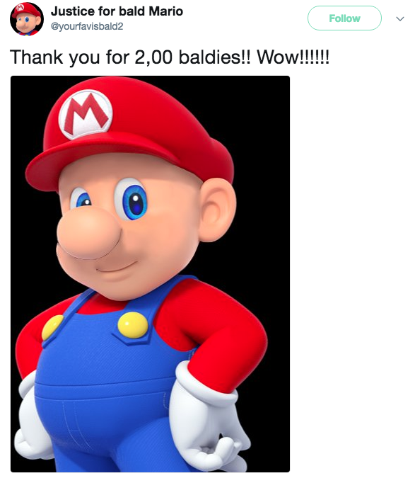
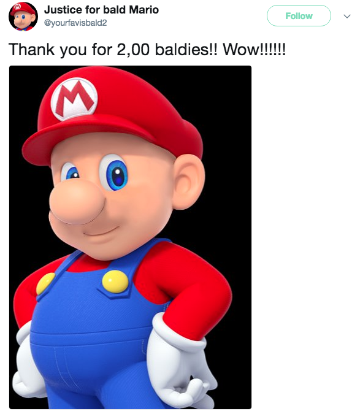

Configurações de Acessibilidade
Sobre o Projeto
O projeto "Matemática no Metrô" é uma iniciativa educativa desenvolvida em São Paulo, fruto de uma parceria entre o Instituto de Engenharia de São Paulo, o Metrô Social e o Instituto Mauá de Tecnologia. Seu principal objetivo é oferecer aulas gratuitas de matemática, especialmente voltadas para estudantes do ensino médio e usuários do metrô, visando esclarecer dúvidas e reforçar conhecimentos nessa área.
As atividades tiveram início em outubro de 2023 na estação Sacomã, da Linha 2-Verde do metrô. As aulas são ministradas por alunos voluntários do primeiro ano de engenharia da Escola de Engenharia Mauá. O atendimento ocorre semanalmente às segundas-feiras, das 14h às 20h, e está programado para continuar até o dia 28 de outubro de 2024.
Após um ano de funcionamento, em outubro de 2024, o projeto-piloto "Resolva aqui suas Dúvidas de Matemática" já apresenta resultados significativos. Essa experiência inédita tem proporcionado aos alunos do ensino médio uma oportunidade acessível de aprimorar seus conhecimentos matemáticos, contando com o apoio de instituições renomadas como o Instituto de Engenharia e o Instituto Mauá de Tecnologia.
O projeto foi inicialmente implementado nas estações da Linha 4-Amarela do metrô de São Paulo, incluindo as estações Luz, República, Paulista, Faria Lima e Butantã.
No geral, o projeto utiliza as estações e os vagões do metrô como plataformas educativas, exibindo cartazes, painéis interativos e atividades relacionadas a diversos tópicos matemáticos, como geometria, aritmética, estatística, probabilidade e outros. Alguns exemplos de atividades incluem:
1-Problemas Matemáticos: Questões matemáticas são exibidas nas paredes das estações e nos vagões para os passageiros tentarem resolver durante a viagem. A ideia é provocar a curiosidade e incentivar a solução de problemas.
História da Matemática: Em certos espaços, são apresentados fatos históricos e biografias de matemáticos famosos, como Pitágoras, Newton e Gauss, tornando a matemática mais atraente ao conectá-la com histórias humanas e realizações.
Matemática Aplicada: Explicações sobre como a matemática está presente no funcionamento do metrô, como na otimização das rotas, na programação dos trens e no design das estações, mostrando a aplicação direta da ciência nos transportes.
Workshops e Eventos: Algumas edições do projeto incluem eventos com workshops, palestras e atividades práticas, onde os passageiros podem aprender diretamente com professores e especialistas.
O projeto também visa democratizar o conhecimento, alcançando um público amplo e diversificado, que inclui desde estudantes até trabalhadores e idosos que circulam diariamente pelo metrô.
Para obter mais informações ou participar das aulas, você pode visitar a estação Sacomã às segundas-feiras no horário indicado. Além disso, o Metrô de São Paulo frequentemente divulga detalhes sobre suas iniciativas sociais e educativas em seu site oficial e nas redes sociais

 
